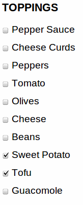
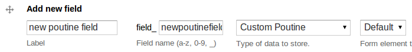
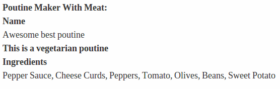

In part 1 of this tutorial, I covered how to make your own custom field and widget. Here I'll cover how to validate that input and format it for the user.
So far, we've:
And by the end of this blog post, we'll have:
If you're confused about the terminology, remember this:
It's important to remember that you can define widgets and formatters on existing fields. Not only that, but you can use existing formatters and widgets for new fields.
Those who missed the first part of this series will want to know why I'm defining all this custom field stuff. The challenge I gave myself in part 1 was to make a multi-value Poutine Maker field. I wanted people to be able to design their own Poutines. Poutine Maker was the result.
Let's review the main hooks in the Field API I covered in the first part of this series:
In this part of the tutorial, I'll cover the following hooks:
Before we get to the field formatter, we should write a field validator so we can be sure that the data entered by the user is good enough to save.
Here's the field validation in action. I selected tofu and sweet potato as toppings for my poutine like so:

However, that's kind of gross, so I've designed a validator to prevent people from choosing that combination of toppings:
There are two main hooks used to enforce field validation. The first of the two hooks is hook_field_validate(), which simply checks the field's values for errors and sets any error messages in the $errors array.
function poutine_maker_field_validate($entity_type, $entity,
$field, $instance, $langcode, $items, &$errors) {
foreach ($items as $delta => $item) {
if (isset($item['sweet_potato']) &&
isset($item['tofu']) &&
$item['sweet_potato'] == 1 &&
$item['tofu'] == 1) {
$errors[$field['field_name']][$langcode][$delta][] = array(
'error' => 'poutine_maker_invalid_full',
'message' => t(
'%title: Your poutine is not tasty. '.
'Please do not mix sweet potato and tofu.',
array('%title' => $instance['label'])
),
);
}
}
}
This code looks at all the poutines entered in our poutine field, and figures out if any of them have selected both tofu and sweet potato. If so, we set an error called 'poutine_maker_invalid_full' with an error message. poutine_maker_field_widget_error() is necessary for this error message to actually be rendered.
'poutine_maker_invalid_full' is an error code chosen by you. This is used because hook_field_widget_error() can handle errors differently based on what kind of error it is.
poutine_maker_field_validate() will communicate with poutine_maker_field_widget_error() using the $errors array. $errors is a container for all the useful information about the errors in a field widget. This is where you store error messages and indicate which element the error occurred on.
Let's take a look at the hook_field_widget_error() code:
function poutine_maker_field_widget_error($element, $error,
$form, &$form_state) {
switch ($error['error']) {
// Handle the error that was set in
// poutine_maker_field_validate()
case 'poutine_maker_invalid_full':
form_error($element, $error['message']);
break;
}
}
The switch statement is just to check what type of error it is. In this case we only have one type of possible error, but I've included the switch statement anyways to illustrate the flexibility.
hook_field_formatter_info() tells Drupal about the formatters your module is making available. Here's an example:
function poutine_maker_field_formatter_info() {
return array(
'poutine_maker_poutine_formatter' => array(
'label' => t('Default'),
'field types' => array('poutine_maker_poutine'),
),
);
}
'poutine_maker_poutine_formatter' is the machine-readable name of the field formatter. This is how other hooks can tell what kind of formatter is being used (if, for example, your module defined more than one formatter).
'field types' => array('poutine_maker_poutine') means that this formatter will format only the 'poutine_maker_poutine' field type. If your formatter was fairly generic like a text box, it could work for text fields, date fields, or colour fields.
Now that we've defined a formatter, we can see the choice on the 'Manage Display' tab of an entity:

Now we just need to give the Field API a renderable array to display to the user. I like to have one generic implementation of hook_field_formatter_view() that delegates construction of the array to a separate function. This makes it easy to add formatters.
Here is hook_field_formatter_view():
function poutine_maker_field_formatter_view($entity_type, $entity, $field,
$instance, $langcode, $items, $display) {
$element = array();
foreach ($items as $delta => $item) {
$element[$delta] = poutine_maker_format_field($item);
}
return $element;
}
Notice that this function returns an $element array, keyed by $delta (each $delta refers to an item in a multi-value field). I render each element item in a separate function called poutine_maker_format_field(). This is not a hook, but rather a helper function to keep my hook_field_formatter_view() implementation clean and short.
Here is my poutine_maker_format_field() function. It starts out with a 'container' element. This is similar to the Form API's fieldset type.
function poutine_maker_format_field($item) {
$element = array(
'#type' => 'container',
'#attributes' => array( 'class' => array( 'field-item') ),
);
// ...
Next, I add the name of the poutine:
$element['name'] = array(
'label' => array(
'#type' => 'container',
'#attributes' => array( 'class' => array( 'field-label' )),
'text' => array(
'#markup' => t('Name'),
),
),
'item' => array(
'#type' => 'container',
'#attributes' => array( 'class' => array( 'field-item') ),
'text' => array(
'#markup' => $item['name'],
),
),
);
Next, I check to see if the poutine is vegetarian. If the poutine is vegetarian, I add a little note that says so:
if ($item['vegetarian']) {
$element['vegetarian'] = array(
'item' => array(
'#type' => 'container',
'#attributes' => array( 'class' => array( 'field-item') ),
'text' => array(
'#markup' => t('<strong>This is a vegetarian poutine</strong>'),
),
),
);
}
The only thing left is the ingredients. The simplest output for me is to just list the ingredients in the poutine:
$toppings_list = array();
foreach (poutine_maker_toppings() as $topping_machine=>$topping) {
if ($item[$topping_machine] == 1) {
$toppings_list[] = t($topping);
}
}
$toppings_rendered_list = implode(', ', $toppings_list);
$element['toppings'] = array(
'label' => array(
'#type' => 'container',
'#attributes' => array( 'class' => array( 'field-label' )),
'text' => array(
'#markup' => t('Ingredients'),
),
),
'item' => array(
'#type' => 'container',
'#attributes' => array( 'class' => array( 'field-item') ),
'text' => array(
'#markup' => $toppings_rendered_list,
),
),
);
This code simply creates a comma-separated list of ingredients, and then sticks that list in a div. The Render API arrays are verbose, but it allows you to avoid writing markup.
The only thing left to do is to return the renderable element item. Remember that this is only one item in a multi-value field. This is not a requirement; it is just the way I have organized my code.
return $element;
}
Here is the formatter in action:

The basic formatter works, but I wanted to format my field data in an exciting way using the HTML Canvas API. Here's the PHP code that creates the canvas tag:
The first step is to add my Javascript file to the page.
function poutine_maker_format_canvas_field($item) {
drupal_add_js(drupal_get_path('module', 'poutine_maker') . '/poutine_maker.js');
Next, I create a container for my canvas element:
$element = array(
'#type' => 'container',
'#attributes' => array( 'class' => array( 'field-item') ),
);
Here's where I create the canvas element itself. I generate a unique ID for it so I can keep track of it.
$canvas_id = 'poutine_maker_' . md5(rand());
$canvas = '<canvas width="500" height="500" class="poutine-maker-animation" id="' . $canvas_id . '"></canvas>';
I then create a JSON data array for my Javascript to use. It includes the URLs for the ingredient photos, the title of the poutine, and a few other things. I include the JSON in the page with drupal_add_js().
foreach (poutine_maker_toppings() as $topping_machine=>$topping) {
if ($item[$topping_machine] == 1) {
$toppings_list[] = $topping;
$toppings_list_img[] = drupal_get_path('module', 'poutine_maker') . '/' . $topping_machine . '.jpg';
}
}
// Give the <canvas> animation some data to work with.
$json = array(
'title' => $item['name'],
'toppings' => $toppings_list_img,
'bg' => drupal_get_path('module', 'poutine_maker') . '/poutine_background.jpg',
'vegetarian' => ($item['vegetarian'] == 1),
'fork' => drupal_get_path('module', 'poutine_maker') . '/fork.png',
);
$js = 'window[\'' . $canvas_id . '\'] = ' . json_encode($json) . ';';
drupal_add_js($js, 'inline');
Finally, I add the canvas to the renderable array, and return the element to be rendered.
$element['text'] = array (
'#markup' => $canvas,
);
return $element;
}
There's a ton of Javascript involved here that I won't get into. The gist of it is I look for canvases with the '.poutine-maker-animation' class, load the data associated with that canvas element, and run the animation with the included photos.
poutine_maker_field_formatter_view() must be tweaked to support more than one widget type, but I won't include the code here (if you're curious, see the code on github or drupal.org). Here's the updated hook_field_formatter_info(). Note the additional entry.
function poutine_maker_field_formatter_info() {
return array(
'poutine_maker_poutine_formatter' => array(
'label' => t('Default'),
'field types' => array('poutine_maker_poutine'),
),
'poutine_maker_poutine_canvas' => array(
'label' => t('Canvas Formatter'),
'field types' => array('poutine_maker_poutine'),
),
);
}
Click the below image for the demo. This demo should work in Chrome and Firefox 4+.
Here's a review of the entire custom field process:
The example code covered in this tutorial are available on github and drupal.org. They are heavily commented and cover more material than I could in these posts.
As always, comment if you have questions or suggestions. If you're using custom fields in interesting ways, let us know!
The Field API hooks that I covered support multiple fields, multiple widgets, and multiple formatters. A good example is the Date module, which defines date, datestamp, and datetime fields. The Date module defines several different widgets for these fields as well: date_text and date_select are two examples. I recommend reading the Date module's code to see a rich example of custom fields types in Drupal 7.